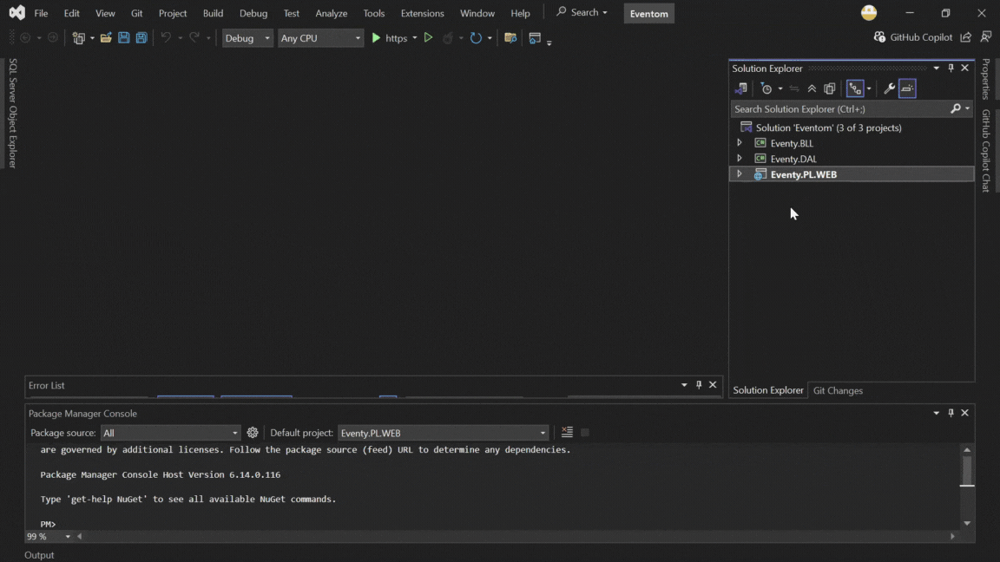
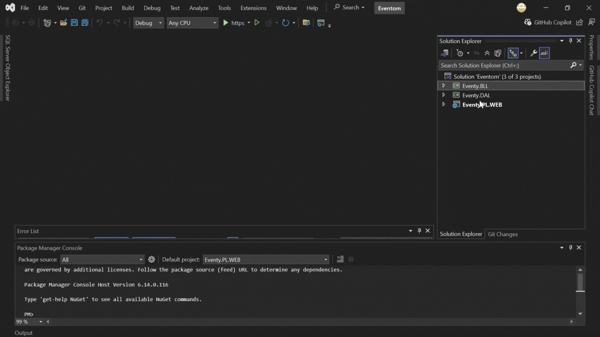

خطوات إضافة Project References
Presentation Layer ← يحتاج يشوف BLL

BLL ← يحتاج يشوف DAL

DAL ← ما يحتاج يشوف أحد
لأنه في أسفل الهرم، ولا يعتمد على مشاريع أخرى.
التالي
الرجوع إلى الصفحة الرئيسية
العودة للصفحة السابقة